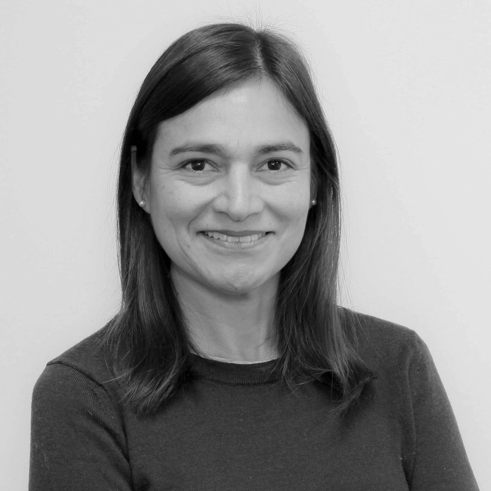

Claudia Aubert
Architecte franco-péruvienne
Présidente d'Archidia (SASU), spécialisée dans l'architecture et l'assistance à la maîtrise d'ouvrage, Claudia a fondé la structure en 2019.
Diplômée au Pérou en 1998, elle obtient en 2003 un C.E.A. Architecture Urbaine à l'École d'Architecture Paris-Belleville.
Après avoir travaillé dans de grandes agences (Jean-Paul Viguier, ADP...), elle s'oriente vers le management de projet chez Artelia pendant plus de 10 ans.